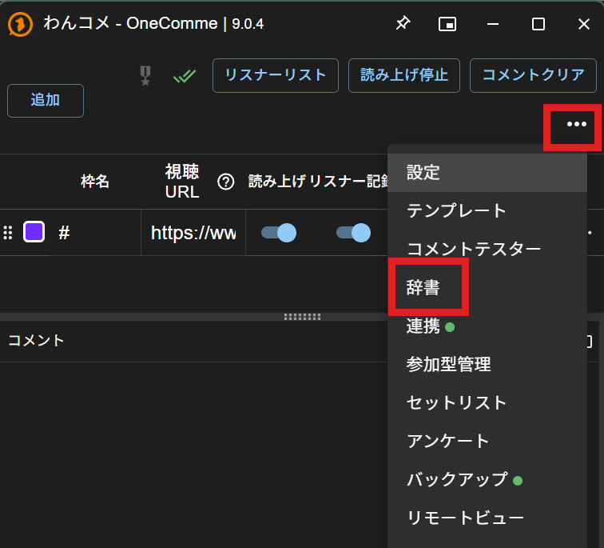
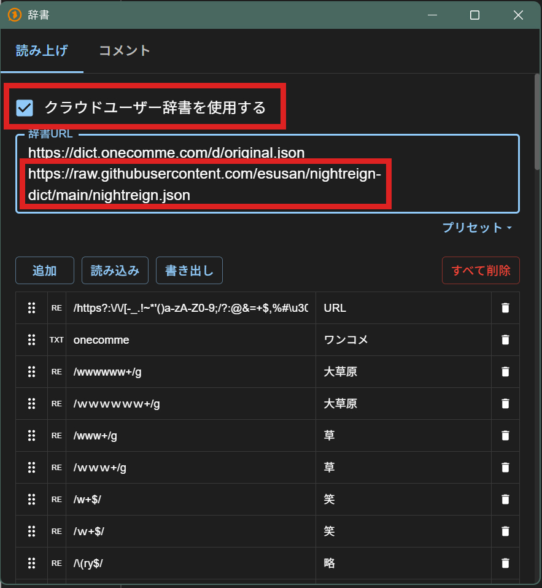

ナイトレイン読み上げ辞書
ELDEN RING NIGHTREIGN の配信でよく出てくる用語を、わんコメの読み上げが正しく読めるようにするためのクラウドユーザー辞書です。わんコメに辞書のURLを登録するだけで使えます。
現在 語を収録しています。
設定方法
-
わんコメの右上にある「…」メニューから「辞書」を開きます。

-
辞書ウィンドウの「読み上げ」タブで「クラウドユーザー辞書を使用する」にチェックを入れます。
-
「辞書URL」の欄に、次のURLを1行追加します。すでに書かれているURLは消さずに、改行して下に足してください。
コピーしました
設定したあと、わんコメが辞書を読み込み直したタイミング（起動したときなど）で反映されます。辞書に単語が追加されたときも、同じタイミングで自動的に新しい内容になります。
反映されないとき
- わんコメを再起動しても読み方が変わらない
- わんコメ 9.0.5 以前には、再起動したときに辞書URLの設定が正しく読み込まれない不具合がありました。9.0.6（2026/07/19公開）で直っています。まずわんコメを最新版に更新してください。
- URLを入れたのに何も変わらない
- 「クラウドユーザー辞書を使用する」にチェックが入っているか確認してください。URLの前後に空白が入っていないかも確認してください。
単語の追加・修正のお願い
追加してほしい単語や、読み間違えている単語を見つけたら、X（@u_se_nr）まで気軽に教えてください。
ご利用について
配信で使うときに許可は不要です。ご自由にお使いください。